Operational User Guide
The Operational module is used to create, complete, and submit operational finance transactions before they move through Controller review, approval, and Treasury payment processing.
Purchase Order
Purchase Order is used to create, save, and submit procurement requests for goods or services.
Purpose
Purchase Orders help Operational users document procurement needs in a structured way, including vendor details, goods or services, quantity, amount, currency, taxes, entity, vessel, department, and supporting documents.
Purchase Order Screenshots
Follow the screenshots in the confirmed operational sequence.
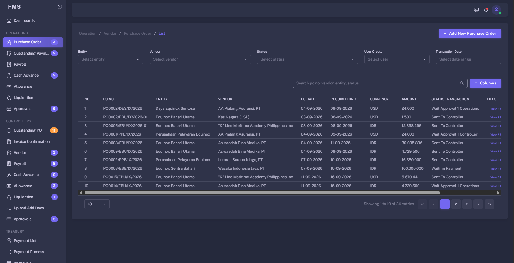
Open Purchase Order to review the available records and actions.
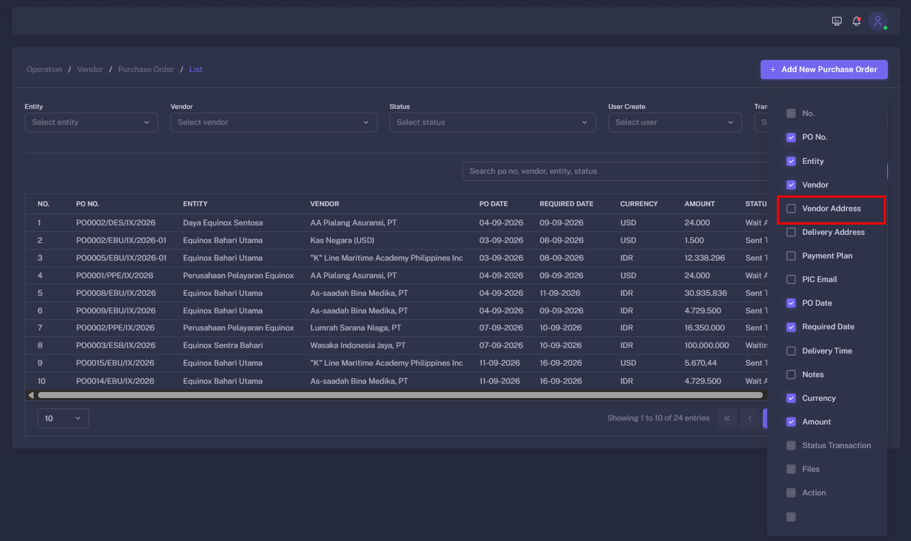
Choose the header information required for the Purchase Order.
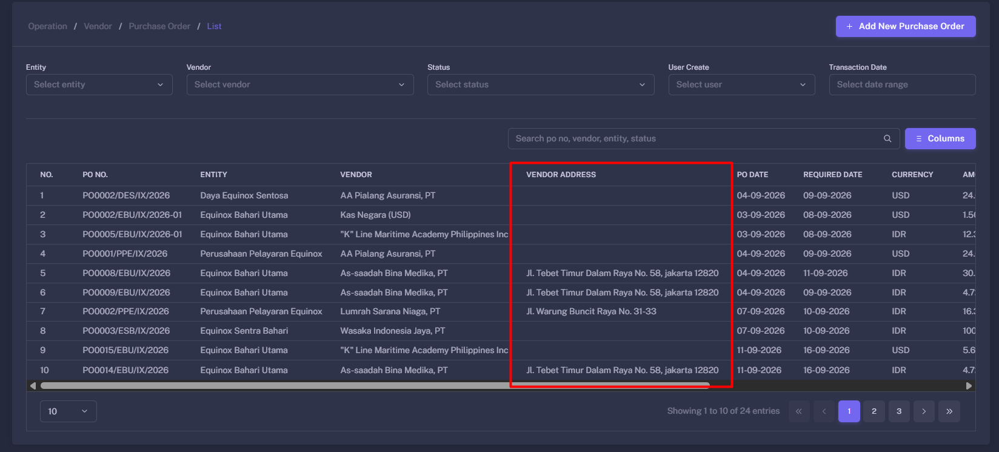
Verify that the selected header information is shown correctly.
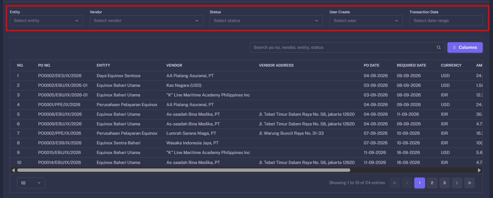
Open the filter controls to narrow the Purchase Order list.
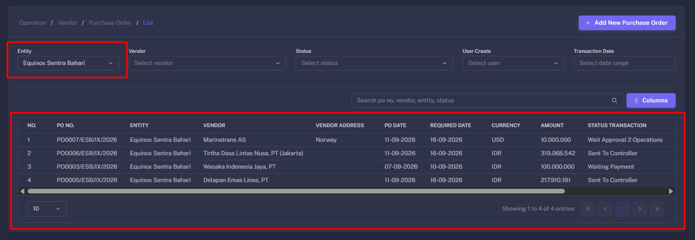
Set the required filter values, then apply the filter.
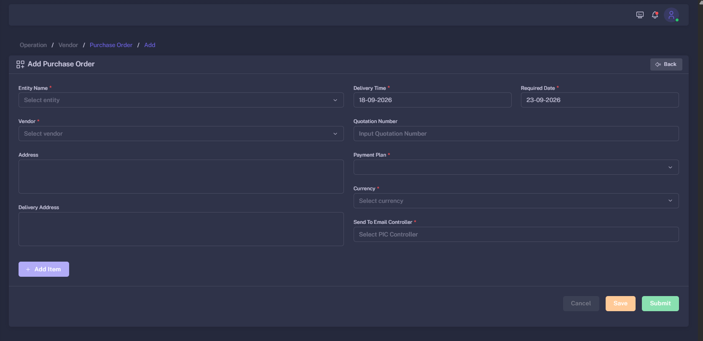
Enter the main Purchase Order header details.
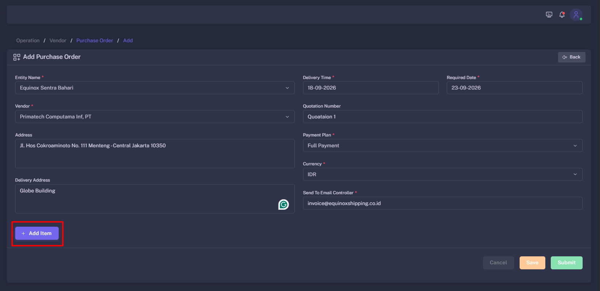
Check the completed header fields before continuing.
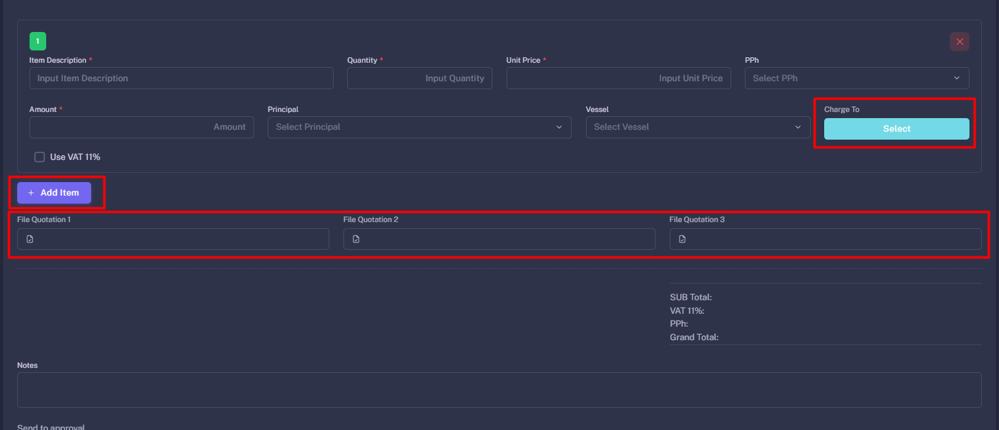
Add a goods or service line item with its quantity and price.
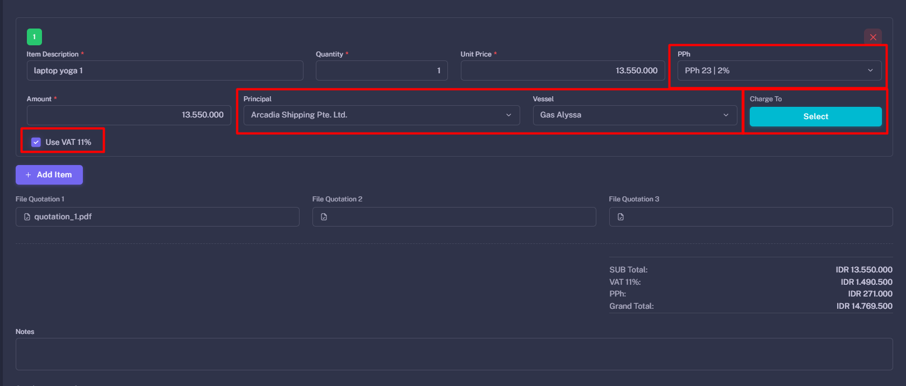
Enter optional item details when they apply to the purchase.
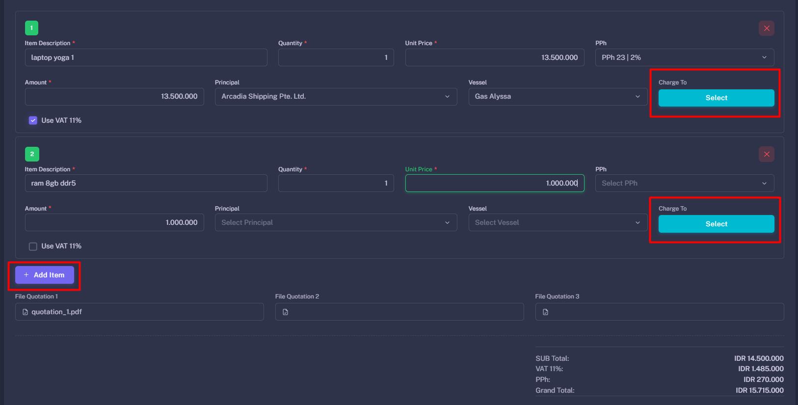
Add an optional charge for the item when required.
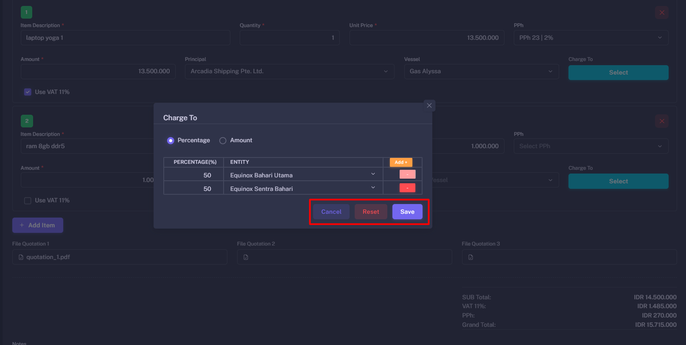
Confirm that the optional charge appears correctly in the item details.
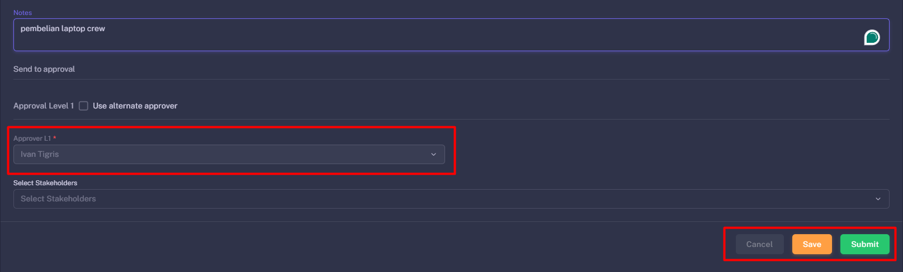
Review the completed Purchase Order information before saving or submitting.
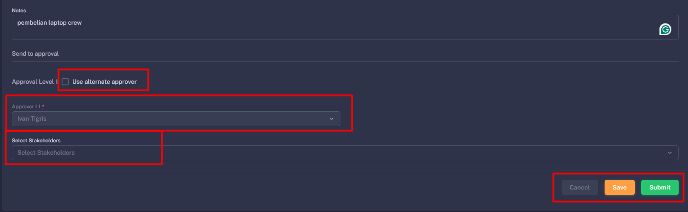
Use the basic form completion flow when optional fields are not needed.
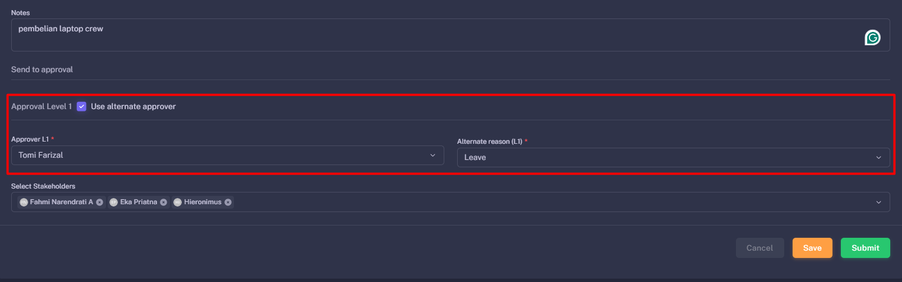
Use this alternative entry layout when it matches the transaction.
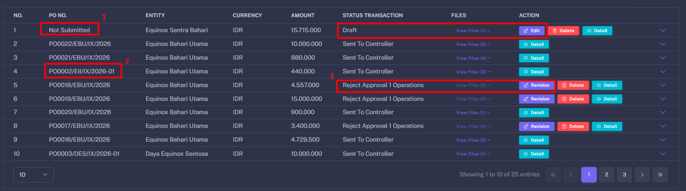
Open the edit action to update an eligible Purchase Order.
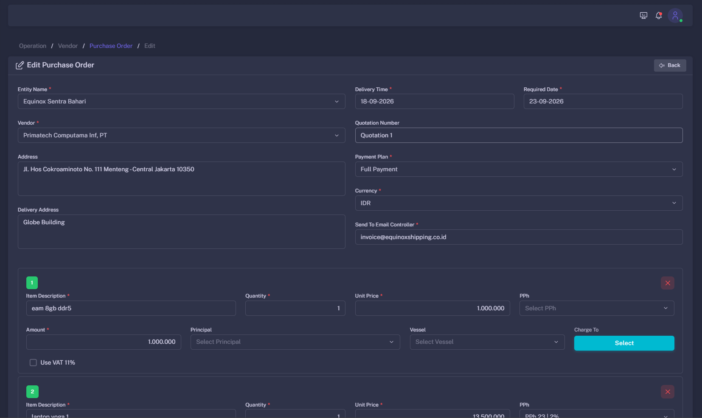
Make the required transaction changes, then save the update.
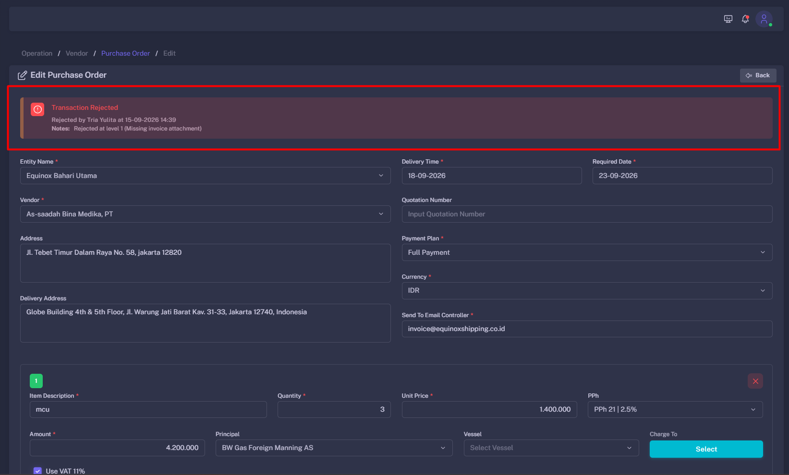
Review revision information and address requested changes before resubmitting.
Verify the vendor, item details, amount, taxes, currency, and supporting documents before submitting the Purchase Order. Editing may be restricted after the request enters the approval workflow.
Outstanding Payment
Outstanding Payment is used to monitor transaction requests or invoices that have not yet been fully processed or paid.
Key Functions
- View transactions that are still unpaid or pending further action.
- Search by document number, vendor, reference number, or period.
- Monitor transaction status from submission through payment processing.
- Identify transactions delayed by incomplete documents or pending approvals.
How to use Outstanding Payment
- Open
Operational → Outstanding Payment. - Use filters such as date, status, vendor, or document reference.
- Select a transaction to view its details.
- Review the current status, payment amount, attachments, and notes.
- Provide corrections or upload additional documents if the transaction was returned.
Outstanding Payment Screenshots
Follow these screenshots in the confirmed sequence.
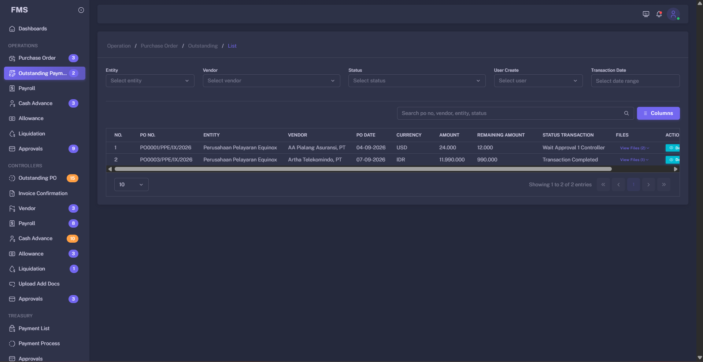
Open Outstanding Payment to review pending or unpaid transactions.
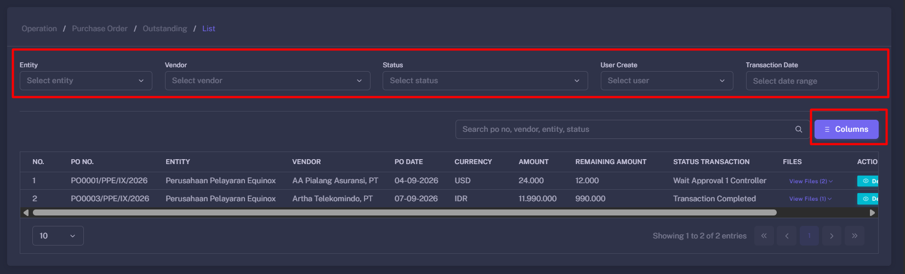
Use the available filter fields to narrow the list to the required transactions.
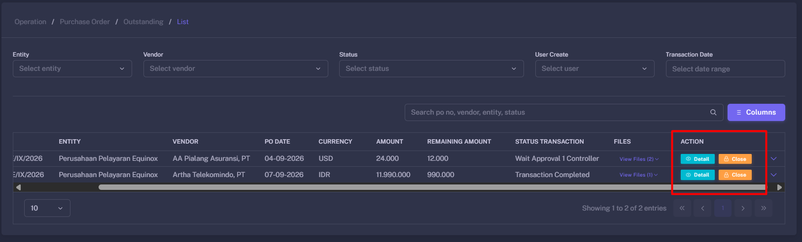
Use the Close HOD action when the transaction has completed the required Head of Department step.
Monitor transactions with upcoming due dates closely. Missing invoices, incorrect bank information, or incomplete approvals can delay payment.
Payroll
Payroll is used to submit salary-related, honorarium, incentive, or other payroll payment requests.
How to create a Payroll request
- Open
Operational → Payroll. - Click
Add Payroll. - Select the payroll period.
- Enter recipient information, payment components, and payment amounts.
- Add descriptions and attach supporting documents when required.
- Review the total amount before saving.
- Click
Submitto send the request for Controller review.
Ensure that the payroll period, recipient data, and total amount are correct and not duplicated before submission.
Cash Advance
Cash Advance is used to request operational funds in advance before actual expenses are incurred.
How to create a Cash Advance request
- Open
Operational → Cash Advance. - Click
Add Cash Advance. - Enter the business purpose and operational requirement description.
- Enter the requested amount, currency, and required funding date.
- Select the department, entity, vessel, or budget account if applicable.
- Upload supporting documents, such as quotations or expense estimates.
- Save as draft or click
Submitto send the request for review.
Cash Advances that have been paid normally require accountability through the Liquidation menu. Keep all receipts and proof of expenses for the liquidation process.
Allowance
Allowance is used to request allowances or operational support costs based on company policy and business requirements.
How to create an Allowance request
- Open
Operational → Allowance. - Click
Add Allowance. - Select or enter the allowance recipient.
- Specify the allowance type, period, and requested amount.
- Add the department, entity, vessel, or cost reference if applicable.
- Upload supporting documents if required.
- Click
Submitto send the request into the workflow.
Liquidation
Liquidation is used to record actual expenses and account for funds received through Cash Advance or another operational advance process.
How to create a Liquidation
- Open
Operational → Liquidation. - Click
Add Liquidation. - Select the related Cash Advance reference.
- Enter actual expense details and amounts.
- Upload invoices, receipts, bank transfer proofs, or other supporting documents.
- Review the difference between the Cash Advance amount and actual expenses.
- Provide an explanation if there is any remaining balance or additional reimbursement.
- Click
Submitto send the liquidation to Controller for review.
Do not submit a liquidation without sufficient supporting documents. Controller may return the transaction if expense details, supporting evidence, or balance explanations are incomplete.
Approval
The Operational Approval menu displays transactions that require an approval decision from a user with the appropriate approval role.
How to approve an Operational transaction
- Open
Operational → Approval. - Select a transaction with a pending approval status.
- Open the transaction detail and review all available information.
- Check the amount, vendor, description, references, and attached documents.
- Click
Approveif the transaction is valid. - Click
Returnif corrections or additional documents are required. - Click
Rejectif the transaction should not continue. - Provide a clear note for Return or Reject actions.
After approval, the system forwards the transaction to the next workflow stage, such as Controller review or Treasury payment processing, depending on the configured business process.
Transaction Status Reference
Status labels help Operational users understand a transaction’s current position and identify which action is required.
| Status | Description | Recommended Operational Action |
|---|---|---|
| Draft | The transaction has been saved but has not been submitted into the workflow. | Complete or correct the information, then submit the transaction. |
| Submitted | The transaction has been submitted and is waiting for review or approval. | Monitor the status and wait for the next workflow action. |
| Returned / Rejected | The transaction was returned for correction or rejected based on workflow review. | Read the reviewer note, correct the issue, and resubmit when allowed. |
| Approved | The transaction has been approved and can proceed to the next workflow stage. | Monitor the payment process through Outstanding Payment or Transaction History. |
Operational Workflow
This is a high-level view of the workflow for transactions created through the Operational module.
Workflow stages, approval levels, and available actions may differ by transaction type, amount, entity, department, vessel, and role permission configuration.